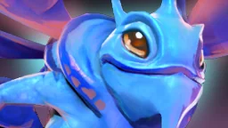

Темп добивань
| Хвилина | Добивання |
|---|---|
| 3:00 | 10–16 |
| 5:00 | 20–32 |
| 10:00 | 45–65 |
| 15:00 | 75–95 |
| 20:00 | 120–150 |
| 25:00 | 170–205 |
| 30:00 | 220–260 |
Відстаєш від нижньої цифри — тренер скаже про це просто в матчі й покаже, який темп добрий на цій хвилині.

Puck — рухливий мідер, який грає від темпу. Нижче цифри, за якими Wardly підказує на цьому герої просто в матчі: скільки добивати, коли відходити й чим рятуватися.
| Хвилина | Добивання |
|---|---|
| 3:00 | 10–16 |
| 5:00 | 20–32 |
| 10:00 | 45–65 |
| 15:00 | 75–95 |
| 20:00 | 120–150 |
| 25:00 | 170–205 |
| 30:00 | 220–260 |
Відстаєш від нижньої цифри — тренер скаже про це просто в матчі й покаже, який темп добрий на цій хвилині.
Безкоштовно, для Windows 10 і 11. Офіційна інтеграція Valve — без ризику для акаунта.
Завантажити для Windows